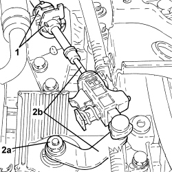
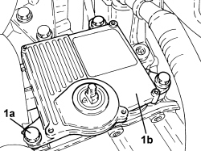
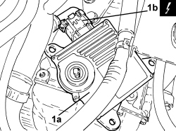
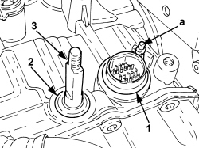

2135B52 ELECTRONIC AUTOMATIC TRANSMISSION ELECTRIC CIRCUIT -ECU MOUNT - R.R.
- Path
- Procedures > 21 GEARBOX UNIT > 2135 AUTOMATIC TRANSMISSION EXTERNAL CONTROLS > 2135B AUTOMATIC TRANSMISSION ELECTRICAL CONTROLS > 2135B52 ELECTRONIC AUTOMATIC TRANSMISSION ELECTRIC CIRCUIT -ECU MOUNT - R.R.
- Kind
- repair procedure (removal / refitting; the operation number is the code)
- Applies to
- engines: 3.2 JTS; all production periods
- Interactive page
- https://sloeber94.github.io/elrnDB-aBrrSpdr/en/#/946004276
Applies to: engines: 3.2 JTS; all production periods
 Removing
Removing
 Refitting
Refitting- Place the gear lever in N.
Op. 5530B52 BATTERY SUPPORT/DRIP TRAY - R.R
1. Disconnect the gear selection cable from the reaction bracket.
2. Undo the nut (2a) and remove the lever (2b) complete with cable from the gear selector and move it aside.

Applies to: engines: 3.2 JTS; all production periods
1. Undo the bolts (1a) and lift up the automatic transmission system control unit (1b) to disconnect it from the connector for the internal wiring.

Applies to: engines: 3.2 JTS; all production periods
1. Rotate the control unit for the automatic transmission system (1a) and disconnect the electrical connection (1b).
Description | Connector | |
|---|---|---|
1b | Automatic transmission control unit |
- Remove the control unit for the automatic transmission system.
- Remove the O-ring on the connector for the automatic transmission internal wiring.

Applies to: engines: 3.2 JTS; all production periods
Refitting
Removing1. Fit a new O-ring on the connector for the automatic transmission internal wiring.
2. If necessary, replace the seal on the gear selector shaft.
3. Check that the gear selector shaft is in position "N" with the bevels positioned as illustrated.
- Check that the connector for the automatic transmission internal wiring is correctly housed on the gearbox casing with the pin (a) positioned as illustrated.

Applies to: engines: 3.2 JTS; all production periods
- Connect the electrical connections to the automatic transmission control unit.
- Place the control unit for the automatic transmission in its housing and tighten the bolts to the specified torque.
Component | Fastening | dia | Value (daNm) | Validity |
|---|---|---|---|---|
Electronic automatic transmission system control unit | Bolt | - | 2.5 | 3.2 JTS CAE |
- Place the lever on the gear selector and secure it tightening the nut to the recommended torque.
Component | Fastening | dia | Value (daNm) | Validity |
|---|---|---|---|---|
Gear selection lever | Nut | - | 1.4 ÷ 1.8 | 3.2 JTS CAE |
- Connect the gear selection cable to the reaction bracket.
Op. 5530B52 BATTERY SUPPORT/DRIP TRAY - R.R
- Connect an Examiner and run the self-learning procedure.
Topics linked from this page (3)
- 5530B10 BATTERY - R+R
- 5530B52 BATTERY SUPPORT/DRIP TRAY - R.R
- M055 AUTOMATIC TRANSMISSION CONTROL UNIT
Topics that link to this page (14)
- 5520BA ENGINE IGNITION SYSTEM CHECK
- 2130B48 GEAR SELECTOR ON AUTOMATIC TRANSMISSION - R R
- 2135B58 ELECTRONIC AUTOMATIC TRANSMISSION SYSTEM WIRING - R.R.
- 2135B86 SEALING RINGS ON ELECTRONIC AUTOMATIC TRANSMISSION SYSTEM WIRING CONNECTOR - REPLACE
- E1050 CAN CONNECTION LINES - WIRING DIAGRAM
- E1050 CAN CONNECTION LINES - COMPONENT LOCATION
- E2022 REVERSING LIGHTS - WIRING DIAGRAM
- E2022 REVERSING LIGHTS - COMPONENT LOCATION
- E5010 IGNITION AND RECHARGING - WIRING DIAGRAM
- E5010 IGNITION AND RECHARGING - COMPONENT LOCATION
- E7050 AUTOMATIC TRANSMISSION - WIRING DIAGRAM
- E7050 AUTOMATIC TRANSMISSION - COMPONENT LOCATION
- E8010 MULTIPLE DIAGNOSTIC CONNECTOR - WIRING DIAGRAM
- E8010 MULTIPLE DIAGNOSTIC CONNECTOR - COMPONENT LOCATION